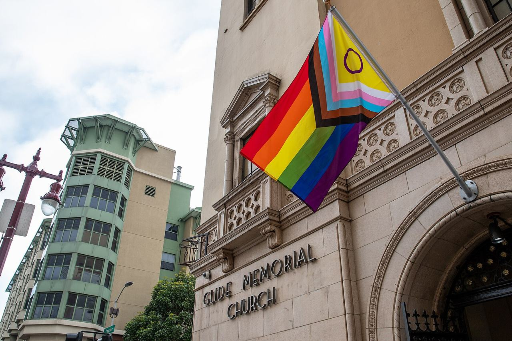

Tenderloin
The flat blocks west of Union Square, in the city's Tenderloin analysis neighborhood, which reaches south-west to take in the Civic Center.

Map
Named buildings and landmarks
-
1

-
2

-
3
-
4

-
5

-
6
-
7

-
8

-
9
-
10
-
11

-
12
Also here: Phillip Burton Federal Building, San Francisco Main Library, Saint Francis Hotel, Baldwin Hotel, Ansonia Hotel, Hotel Fusion, Hotel Shaw, San Francisco Central YMCA, Native Sons Building, Hotel Californian, Marland Hotel, Cliff Hotel, Essex Hotel, McGovern Building, Winston Arms Hotel, Alhambra Apartments, Olympic Hotel, Glide Memorial Church, Kaiser Channel 44 KBHT T.V. Studio, Asian Art Museum, Federal Office Building, Mardikian Building, 149 Mason Street Studios, Donatello Hotel, GEDC Family Housing.
Streets documented so far
- Ada Court
1 building, built 1914; 1 in the Uptown Tenderloin Historic District. - Derby Street
1 building, built 1912. - Dodge Street
1 building, built 1925; 1 in the Uptown Tenderloin Historic District. - Dr Carlton B Goodlett Place
1 building, built 1900; 1 in the Civic Center Historic District. - Eddy Street
4 buildings, built 1907–1956; 3 in the Uptown Tenderloin Historic District. - Ellis Street
1 building, built 1908; 1 in the Kearny-Market-Mason-Sutter Conservation District. - Geary Street
1 building, built 2017. - Golden Gate Avenue
6 buildings, built 1910–1917; 2 in the Uptown Tenderloin Historic District. - Grove Street
The Bill Graham Civic Auditorium's block, where the Mechanics' Institute held its industrial exhibitions from 1882. - Hayes Street
1 building, built 2018. - Hyde Street
1 building, built 1929; 1 in the Uptown Tenderloin Historic District. - Isadora Duncan Lane
1 building; 1 in the Uptown Tenderloin Historic District. - Jones Street
1 building, built 1922; 1 in the Uptown Tenderloin Historic District. - Larkin Street
11 buildings, built 1911–1927; 11 in the Uptown Tenderloin Historic District. - Leavenworth Street
4 buildings, built 1907–1923; 4 in the Uptown Tenderloin Historic District. - Market Street
1 building, built 1917. - Mason Street
2 buildings, built 2009. - Mcallister Street
2 buildings, built 1906–1910; 1 in the Uptown Tenderloin Historic District. - Meacham Place
1 building, built 1900; 1 in the Lower Nob Hill Apartment Hotel Historic District. - O'Farrell Street
2 buildings, built 1907–1924; 1 in the Uptown Tenderloin Historic District. - Polk Street
1 building, built 1912. - Post Street
6 buildings, built 1917–1920; 2 in the Lower Nob Hill Apartment Hotel Historic District. - Taylor Street
1 building, built 1910; 1 in the Uptown Tenderloin Historic District. - Turk Street
2 buildings, built 1924–2022. - United Nations Plaza
1 building, built 1982; 1 in the Civic Center Historic District. - Van Ness Avenue
1 building.
Parks and public spaces
- Father Alfred Boeddeker Park
Neighborhood park or playground, 1.1 acres. - Joseph L Alioto Performing Arts Piazza
Civic plaza or square, 5.4 acres. - Sgt. John Macaulay Park
Mini park, 12,197 sq ft. - Tenderloin Rec Center
Neighborhood park or playground, 28,750 sq ft. - Turk & Hyde Mini Park
Mini park, 6,534 sq ft.
Historic districts here
Adjacent neighborhoods
Union Square adjoins north-east and Nob Hill north up the grade from Bush Street. South of Market is south-east across Market Street, Hayes Valley west beyond Van Ness Avenue, and the Western Addition north-west.